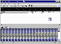

|
|
| 当前位置：电脑报电子版 > 1999 年 > 44 期 > 大众网络 > 下载不求人 |
| 《 下载不求人 》 |
| 上网最常做的事之一便是下载软件了。Internet上有好多免费的软件，如果你上了网还不知道如何去下载这些免费的东东，那岂不亏大了？下面我就给大家介绍一下如何操作。 提供软件下载的站点很多，我就以到CPCW网站的下载区下载一个桌面主题为例吧。 一、利用IE直接下载 1.启动IE，在地址栏中键入：http:／／www.cpcw.com，回车；2.在焦急地等待中，来到了CPCW的主页，鼠标移到“MYDOWN下载”处时变为一只小手，点击它； 3.出现可供下载的软件列表。因为软件的数目很多，所以往往分类存放。如果你不太清楚要下载的软件到底归于哪一类，你还可以进行搜索（图1）。这里我们点击“壁纸”，然后逐级深入，找到要下载的桌面主题：“美女与野兽”（图2）。 4. 网上提供的下载软件一般以exe或zip压缩包的形式存在，记住注意东东的大小哟。鼠标点击网页上的下载文件链接，即出现“文件下载”窗口。 选择“将该文件保存到磁盘”，点击“确定”，出现“另存为”窗口，选择保存路径后点击“保存”； 5. 出现的“文件下载”窗口中显示下载文件的来源、保存路径、下载剩余时间及下载速度等； 6. 下载完毕后，你可以从你保存的路径中找到该文件。 但这种下载方式有个很大的缺点，就是在下载过程中如果断线，那么只能重头开始下载，以前辛辛苦苦下载的部分一点也用不上。而且下载的速度也很慢，因此更常见的下载方式是使用专门的下载工具。 二、下载工具《网络蚂蚁》 我们还可以利用下载工具更方便、更快捷地下载软件。它们可以让你避免下载时断线的烦恼。这些下载软件支持断点续传（即如果下载被中断，下次它可以从文件中断的地方接着下载，不必从头开始）。这里我给大家介绍一款被称为“飞毛腿”的《网络蚂蚁》（NetAnts），它可是中国人自己开发的哟。与其他流行的下载工具相比，如Go!Zilla,GetRight,Net Vampire等,网络蚂蚁的特色是可以进行多点传输（即它可以把要下载的软件分割成5块，每块同时下载，类似于多次登录抢点下载）。1.安装《网络蚂蚁》：直接运行安装盘中的setup.exe就可完成安装； 2.启动《网络蚂蚁》（图3），其中最下部有两个标签页，“block”标签显示下载和连接的进度，“log”标签则显示下载和连接的历史记录；上部是“曲线图”窗口，用来显示数据传输的Bps曲线（即网络蚂蚁每秒钟下载的字节数） 3.我们先进行常规设置：点击“File”菜单中的“Option”，出现“NetAnts Configure”对话框，选择“Job default”标签，在“Download directory Configure”框中指定软件下载后存放的路径，其他值均保持默认值。 4. 《网络蚂蚁》的下载方法有两种：一种是“拖曳下载”的方法。启动“网络蚂蚁”后，屏幕上会出现一个“拖放”图标，即一只蚂蚁在不停走动的小窗口，如果没有看到，请在菜单中选择“View／Show Drop Basket”。你只要用鼠标左键按住网页上的下载链接地址，将它拖放到该图标中，在出现的“Add job”对话框中单击“确定”，这只勤劳的蚂蚁就开始为你默默地工作了。另一种方法是在浏览器中自动下载。“网络蚂蚁”的最新版本（1.0 beta2.5）可以与IE、Netscape浏览器相配合进行文件下载，在IE、Netscape中点击下载链接，《网络蚂蚁》就可自动将下载任务加入下载任务列表，确定后就可以开始下载。（要启动该功能，在设置窗口中选择“Automation”标签中的“Integrate with browser clicks”即可）。 5.如果你想知道软件的下载情况，可用鼠标双击“拖放”图标，出现正在下载的界面，其中的含义如下： Target:下载文件的链接地址；Ratio:已经下载的百分比;Bps:下载速度;Time:下载时间;Ant number:使用了几只蚂蚁下载;Error:下载出错的次数; 不错吧？快到netants.yeah.net去把它带回家吧！它的最新版本是NetAnts v1.0 Beta2.67。相信有了它，你一定会方便地下载到许多好东东的。 三、其它下载工具 当然，现在还流行着其它优秀的下载软件，让我们来看看它们各有些什么特点吧：《网络吸血鬼》 (Net Vampire) 是一个俄国人用Delphi2.0编写的免费软件，支持HTTP和FTP断点续传，有很强的抗干扰能力，特别是在网络繁忙、连接不可靠时，更能表现其特点。 《下载专家》(DLExpert) 多线程、全中文界面的免费下载软件，特点是可以同时下载一个文件的不同部分，最多可达100个部分。 GO!Zilla 是需要注册的共享软件，它可以定时传送也可以在指定的时间内拨号上网开始下载而后自动断线关机，甚至可以使用“Leech File”功能批量下载文件。 Getright 有30天时限的共享软件，它是一个老牌下载工具，其特点是可以对同时下载文件的个数和传输速度进行限定。 四、部分提供软件下载的中文站点 电脑报：www.cpcw.com金蜘蛛软件下载中心：www.download.com.cn 软件过山车：download.ihw.com.cn ChinaByte软件仓库：www.chinabyte.com 商都信息港电脑世界：comp.zz.ha.cn 华军个人主页：www.newhua.com 高春辉的个人网站：www.paulgao.com.cn （重庆 龚可） |
| 下载本期推荐软件 | 页 首 |
| 《电脑报》版权所有，CPCW网站编辑部设计制作发布 |